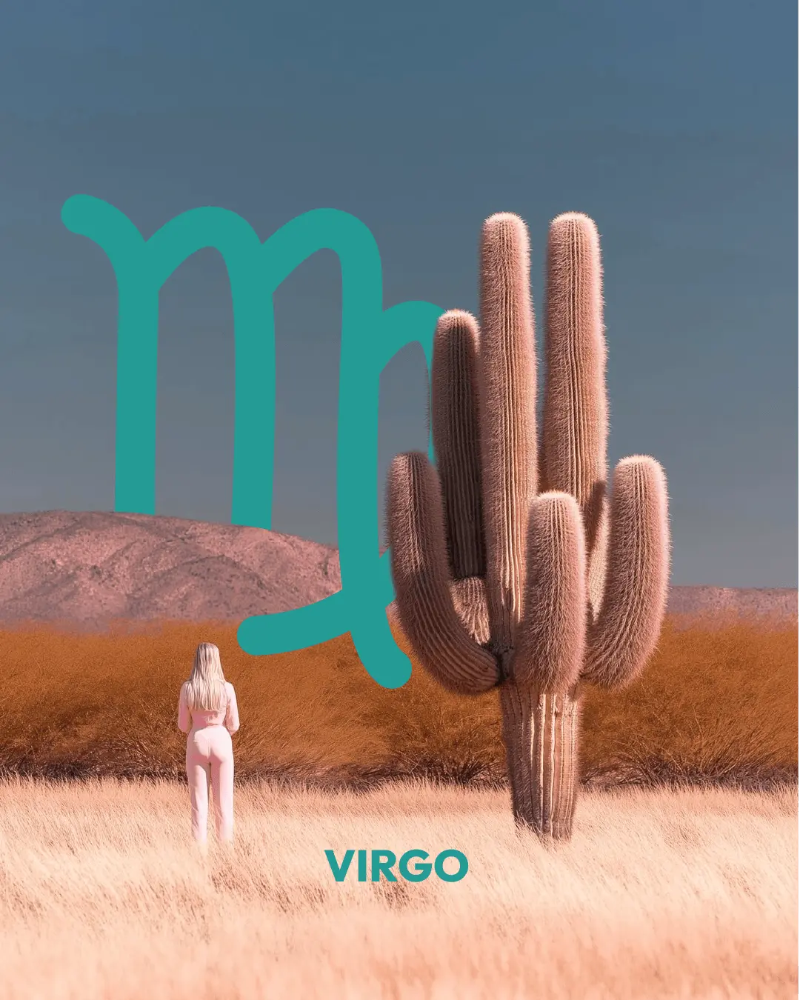

Spotify

La tierra pensante
Pensar es un modo de acomodar la realidad, de poner cada cosa en un casillero y lograr que lo disperso se aglutine bajo una etiqueta, que lo informe se ajuste a una categoría. Entender es reducir la diversidad de lo que existe pasándolo por el tamiz de nuestros conceptos. Reducimos el mundo para poder abarcarlo, controlarlo y comprenderlo.
Pero así también nos perdemos de él.
El orden y el amor
Como una estantería infinita en la que todo puede ser acomodado, el mundo aparece para Virgo como una serie de procesos a cumplir, como una eterna obra a realizar. De a momentos, aparece la alegría de la acción y la satisfacción de lo que se ha logrado, pero inevitablemente también aparecerá la incomodidad frente a lo que aún no hemos logrado, el desagrado frente al desorden inevitable que espera otras jornadas de trabajo. El caos siempre le gana al orden, y al final del día la felicidad es función de esa aceptación.
Pero también es cierto lo que dice Bert Hellinger: "Con amor, solo con amor, no basta. Tiene que estar en orden". El orden permite que el amor circule, y es la diferencia entre la pasión y la patología.
El mar y la orilla
Lo que sin duda es imposible de ordenar es el mundo emocional. La forma en la que se desenvuelven las emociones es caótica y de nada sirve intentar acomodar la angustia en una planilla de Excel. Cuando acepto que hay cosas que no soy capaz de entender y que necesito vivir, puedo construir un muelle para entrar en el agua sintiéndome a salvo. Profundizar en lo sensible sin sentirme tan expuestx.
La devoción
Del mismo modo, no podemos ordenar nuestras pasiones, que siempre serán disruptivas respecto de lo que esperamos, creemos y pensamos. A pesar de lo que pudiera parecer, en Virgo este exceso de lo pasional tiene un lugar tan intenso, que solemos encontrarnos fuertemente con la rigidez y la obsesividad como forma de conjurar la potencia de lo devocional.
Las primeras vírgenes eran las sacerdotisas, que entregaban su cuerpo y su vida a la Diosa cuyo templo custodiaban. Pero la propia virgen María habla hermosamente de cómo el cuerpo se entrega, se deja habitar por el espíritu.
La humildad
Hay dos modos de habitar lo pequeño. El primero consiste en comprimirnos, borrarnos y dejar de lado nuestra individualidad para acomodarnos a lo que nuestra sociedad y nuestra familia nos demanda. Achicarnos para entrar en donde se nos pide que estemos, ofreciendo lo que creemos que los demás necesitan.
La otra forma es la de aceptar humildemente la verdad que nos habita. Ser pequeñx frente a mi propio deseo. Permitir que lo que inocentemente soy florezca en el espacio que me ha tocado habitar en este mundo.
Algo enorme y misterioso me trajo a estas tierras, puedo rendirme ante eso y no pretender tener lo que los demás necesitan. Puedo entregarme a ser un pequeño gesto de lo vivo y desde allí nutrir los sistemas de los que soy parte.
Virgo nos invita a ser el trigo que se entrega a la tierra, confiando en la fertilidad que lo recibe y lo aloja en su seno oscuro y cálido, como una gran madre verde pródiga y firme. Ser la semilla en la que late lo vivo. Entregarnos a ser alojadxs por la tierra que nos sostiene, pero también al humilde gesto de alojar, de ser nosotrxs también tierra que aloja a un otrx y sus necesidades, a un otrx y sus deseos.
La salud y la enfermedad
Aquí aparece la restricción, el desafío y la invitación a reconocer los límites de la propia subjetividad. La enfermedad nos recuerda que nuestro cuerpo es frágil, que somos un delicado organismo vivo, vulnerable frente al destino. Y también nos recuerda que nuestra fortaleza no es la soledad sino lo colectivo. No nos curamos solxs, no encontramos el equilibrio en soledad, necesitamos que otros se entreguen a reparar lo dañado en nosotros. En Virgo es fuerte la figura de la enfermera, porque es un signo que habla de esa entrega a ser el remedio que el otrx necesita.
La salud es la integración orgánica y profunda a los sistemas de los que formamos parte, dando y recibiendo lo necesario para estar en equilibrio interno y a su vez con el afuera. Así, en un entorno enfermo apenas podré aspirar a estar en un equilibrio parcialmente sano, y solo habrá salud cuando el sistema del que soy parte esté saludable. No hay individuos sanos, sino pueblos sanos. Muchas veces Virgo se ofrece como pharmako, como chivo expiatorio para purgar lo enfermo de su entorno, y así se obsesiona en curar adentro lo que está enfermo afuera. A veces la salud es sencillamente reconocer, mirar a los ojos lo desequilibrado, y darle un lugar más apropiado, más acotado.
Si no sabés qué tenés en Virgo...
Si no sabés qué tenés en Virgo...
Si no sabés cuál es el planeta que está en Virgo porque no conocés el símbolo, al lado de los nombres está el símbolo.
Los Planetas
El Sol
El Sol
Con el Sol en Virgo nos vamos a encontrar con un gran talento para ordenar el mundo, que se vive de una forma a veces liviana y agraciada, y a veces obsesiva y tensa. Cuando necesito el orden, tiendo a traerlo con acartonamiento y torpeza. Cuando puedo ver de qué forma se optimizan las distintas situaciones, puede haber algo mucho más suelto y mucho más prodigioso desplegándose. Esa diferencia entre el modo defensivo y el modo expresivo de lo virginiano es muy marcada.
El defecto que tienen estos soles es creer que sabe cuál es la mejor forma de hacer las cosas: esta es la posta, lo que dicen los demás es ineficiente.
Hay dos imágenes del arquetipo de la Virgen que ilustran la potencia del Sol en Virgo. Una son las vírgenes precatólicas, las sacerdotisas de los templos que se entregaban a los viajeros, que practicaban la magia sexual, que exploraban el mundo sutil a través de la sexualidad. La otra es la Virgen María: ahí estaba ella, lo más tranquila, cuando vino el Espíritu Santo y la embarazó. "Tengo el Espíritu Santo adentro". Esa entrega es Virgo. Una entrega que a veces se encuentra prodigiosamente en la escritura: yo hago una labor muy meticulosa para que aparezca algo. ¿De dónde sale la potencia de un texto literario, de un texto académico? ¿En las palabras o en algún lugar entre medio? Entregarse a esa potencia es lo más dulce en Virgo.
Si quiero ordenar dejando afuera el misterio, termino en la obsesión y en el control: lugares que no solo cortan el contacto con lo más potente y más creativo, sino que además son lugares de imposible satisfacción. Nunca me voy a sentir a salvo controlando porque no puedo controlar. Si sostengo mi seguridad emocional en controlar, estoy condenada a la insatisfacción.
Disponibilizar el espacio de la vida a través de lo más concreto y tangible, de la propia agenda, de la rutina y el cronograma de la vida; desde el propio cuerpo que se entrega a lo misterioso se vuelve prodigioso y satisfactorio.
El Sol en Virgo va a buscar siempre brindar un servicio a los otros. Ya sea el servicio de intentar mantener todo bajo control, o el servicio de permitirles esa disponibilidad y esa entrega a algo más grande y misterioso.
La Luna
La Luna
La Luna en Virgo necesita orden, pulcritud, que el sistema del que es parte funcione bien. Necesita que las cosas sean ordenadas y entendibles, comunicables, organizables, etiquetables. ¿Creés que esa necesidad se satisface en la mayoría de las familias que pueblan este planeta?
El gran dolor de estas lunas tiene que ver con el desborde de lo emocional —el desborde de sus madres, de sus padres, de sus historias familiares— frente al cual la posición que tienden a adoptar es la de intentar reparar, corregir y enmendar todo lo que está roto, fallido y desarreglado en la historia familiar. La Luna en Leo dice "mírenme, que yo soy importante". La Luna en Virgo dice: "¿qué tengo que hacer para que todo funcione bien? ¿Qué necesitan de mí?".
En esa posición suele haber mucho padecimiento. En parte porque es imposible: ningunx niñx puede darle a su madre y a su familia lo que necesitan. Y en parte porque a veces la posición que la familia pide que ocupemos es recontraincómoda.
Hay una autoexigencia muy fuerte en estas lunas: la impecabilidad, el no error, el no desacierto. Todo tiene que ser preciso. Y como todo signo de tierra, el reino de lo material es central: los modos de expresar afecto y de recibirlo van a tener que ver con lo concreto. El trabajo les da seguridad, no solo material sino también emocional. Y algo muy interesante: a diferencia de la Luna en Tauro, que se siente más segura en la abundancia, la Luna en Virgo y la Luna en Capricornio se sienten más seguras en la escasez y el esfuerzo. La seguridad está más en la laboriosidad que en los frutos de esa laboriosidad.
Hay en lo virginiano una tendencia a querer arreglar lo que está dentro, lo que está abajo y atrás, lo que está en la memoria y en la historia. Mi familia, mi propia historia. O bien, cuando hay mucha rigidez, tomar esa rigidez de la familia como grandes rectores y ordenadores.
El lugar más obsesivo: como sé cuál es la mejor forma de hacer las cosas, esta es la posta y el resto son más ineficientes. Lavo los platos con una precisión con la que un japonés construye un auto. Y puede ser que respecto de esa forma perfecta y maquinita, el resto efectivamente sean más ineficientes —en su propio terreno, lo virginiano es difícil de ganar—. Pero el peligro es justamente ese nivel de acartonamiento y de obsesividad que termina volviéndose un poco persecutorio.
El lugar prodigioso de la Luna en Virgo está en la posibilidad de construir esa tierra fértil en la cual el deseo puede desplegarse y ser sostenido. No ser dique de contención permanente para todos nuestros pulsos, sino por el contrario ser un lugar expansivo que los sostiene dándoles un cauce. La imagen del agricultor o la agricultora que ordena la tierra para que crezcan las plantas, para que la fuerza del sol y del agua puedan hacer la magia. Ese es el lugar prodigioso: el orden que permite la creatividad. Saberse profundamente al servicio de algo más grande.
Y sobre el código de afecto: la Luna en Virgo busca seguridad emocional siendo importante para el otro, siendo necesitada por el otro. "Yo sé que vos me querés porque me necesitás. Como me necesitás, no te vas a ir. Como no te vas a ir, me siento segura". Hay algo de narcisismo virginiano en la necesidad de sentirse útil: para participar hace falta que el otro necesite algo de mí. Esto no está ni bien ni mal, es la forma tosca en la que de alguna forma logramos sentirnos a salvo.
Mercurio
Mercurio
Mercurio en Virgo está en domicilio, pero en su forma más lenta, más trabajada, más hacia adentro. Si Mercurio en Géminis es oral, veloz, ramificado, en Virgo la comunicación se hace mucho más natural a través de la escritura que de la palabra hablada.
Hay algo de este Mercurio que necesita más procesamiento antes de hablar. Más firmeza, más certeza respecto de lo que va a decir. Mientras más preciso, más enciclopédico sobre un tema, más cómodo se siente para nombrarlo. Si esa certeza no está, si no tiene un saber sólido sobre algo, le cuesta más decirlo. La palabra no sale hasta que esté segura de lo que dice.
A la hora de incorporar conocimientos, hay algo muy meticuloso, obsesivo y prolijo. Mercurio en Virgo estudia escribiendo. Toma apuntes. Revisa. Corrige. La escritura es la vía más natural de aprendizaje porque permite hacer algo que la oralidad no admite: volver atrás, borrar, poner aquello en lugar de esto, ver qué dice ahí de nuevo. En la palabra hablada se puede enmendar —ay, dije planta, quería decir tomate— pero no se puede corregir. En la escritura, sí.
Hay algo de esta posición que se relaciona íntimamente con Mercurio retrógrado. Virgo es el domicilio nocturno de Mercurio, su cara más terrena, más lenta. Cuando Mercurio retrograda, lo que favorece son exactamente los procesos virginianos: la reorganización, la depuración, la limpieza, la corrección, el perfeccionamiento, la optimización. Todo eso está en el corazón de este Mercurio.
Lo que puede resultar desafiante es todo lo contrario: la circulación rápida, la improvisación, hablar sin preparación, moverse con agilidad en lo oral. No porque no pueda, sino porque no es su terreno natural. Su terreno es el procesamiento interno, la escritura, la precisión que tarda pero llega.
Venus
Venus
Venus en Virgo trae una vinculación con la materia y lo concreto muy ordenada, un poco austera, que disfruta de cierta precisión. No hay aquí exuberancia ni estruendo —más bien lo contrario—. Si Venus en Tauro goza del placer sensorial a pleno, Venus en Virgo lo acota, lo afina, lo depura. Hay algo de movimiento ceremonial, de minimalismo que no es frialdad sino exactitud. Una torta de ricota antes que una con cinco pisos de dulce de leche. Lo rococó, lo barroco, acá no entran.
Lo que seduce a esta Venus tiene que ver con el orden, la prolijidad, y con algo que funciona bien. No me atrae tanto el estatus social del otro —eso sería más de Libra— sino su oficio, su lugar de servicio, lo que hace concretamente en el mundo. Alguien que ayuda, que asiste, que tiene una vocación. Eso me resulta valioso.
Y la forma en que esta Venus seduce es ofreciendo utilidad. Te convengo. Si estás conmigo, te mejoro la vida. Es una seducción que se despliega desde el servicio, desde la capacidad de resolver, de optimizar, de estar disponible para lo que el otro necesita. Esto tiene algo muy real —quienes tienen Venus en Virgo o en la casa 6 suelen ser genuinamente buenos entendiendo las necesidades ajenas—. El riesgo es que esa orientación hacia la utilidad restrinja el acceso al propio placer, porque el disfrute queda siempre en segundo plano detrás de la función.
Pero hay algo profundo aquí que no siempre se ve: Venus en Virgo puede disfrutar de la entrega. No la entrega como sacrificio, sino como la tierra que deja crecer el trigo. Como la Virgen María que se entrega sin entender del todo lo que está pasando. Hay un placer muy particular en ese acto —en hacer una labor muy meticulosa para que aparezca algo que no se sabe del todo de dónde viene—. En los vínculos, en el trabajo: el placer de Venus en Virgo está ahí, en esa entrega que produce algo más grande que unx mismo.
La invitación de esta posición es aprender a disfrutar profundamente de lo que se entrega, y entregarse de verdad en esa entrega. Porque ahí es donde aparece un placer muy profundo y una verdad muy profunda. La tierra es siempre receptiva, y Venus en tierra también: incluso en el acto de dar, se puede recibir.
Marte
Marte
Marte en Virgo no está del todo cómodo. Si Marte en Aries sale sin miramientos a buscar lo que quiere, el guerrero en Virgo llega con la lupa. Su modo de iniciar es ordenado, prolijo, material: antes de arrancar, asegurar la sustancia que el proyecto va a necesitar. Desayunar bien antes de subir la montaña. Conseguir las herramientas antes de empezar. La lista, el orden, el proceso claro —ese es el puntapié de este Marte.
Marte en Aries no haría ninguna lista. Saldría, arrancaría y después vería en el camino. Marte en Virgo agarra el papel, anota y ese gesto ya es el comienzo.
Propicia la expresión de lo solar a través de la escritura, el pensamiento, las ideas, el orden. Como si en la organización estuviera el sustrato necesario para que las cosas germinen y florezcan —una tierra que recibe la fertilidad de lo solar y la hace posible.
La conquista de este Marte es paradójica: toma dando. Se abre paso siendo necesitadx. Brinda precisión, eficiencia, servicio —y en esa entrega encuentra su forma de apropiarse de un lugar en el mundo. Es una conquista desde el control, lo puntilloso, lo detallista. Incómodo y real al mismo tiempo.
La energía pulsional de este Marte aparece en relación a la escritura, al servicio, a lo material y concreto, y también a la salud —como potencia y como impotencia. Los síntomas físicos de un Marte en casa 6 o en Virgo pueden ir desde la anemia hasta la impotencia sexual, pasando por todo aquello que limite la acción y el movimiento. A veces a través de accidentes que de alguna forma frenan y restringen la propia vitalidad.
El guerrero está afilando la espada. Mucha precisión, mucha capacidad de análisis, mucho control sobre el proceso. El desafío es aprender a soltar el orden obsesivo, porque la entrega es el camino hacia la potencia.
Júpiter
Júpiter
Júpiter en Virgo encuentra el sentido en el orden. En ser un vector de orden. En que las cosas funcionen, en que el sistema del que uno es parte esté bien. Esa perspectiva —lo justo ordena, y ordenar tiene valor— es el corazón de este Júpiter.
La buena suerte aparece en la persistencia y en la humildad. En el trabajo. Los compañeros de trabajo, los jefes, incluso eventualmente los propios subordinados, pueden ser grandes referentes y figuras jupiterianas. Y el servicio que se brinda es algo que le da sentido a la vida de una forma muy particular: no tanto lo que se gana, sino lo que se puede hacer para que el sistema del que se es parte funcione mejor. Esa es la alegría, ahí está la fiesta.
En casa 6, el sentido también aparece en la salud y la enfermedad —en los procesos de sanación, propios o ajenos. Curarse puede ser un lugar de profundo significado. Y lo mismo brindar cuidados ligados a la salud.
La libertad para Júpiter en Virgo es la libertad que da el orden. Si está todo ordenado, hay espacio para hacer lo que se quiere. El desorden quita libertad, impone cosas. Hay algo casi paradójico en esto, pero tiene su lógica interna muy virginiana: la estructura libera.
La expansión también tiene mucho que ver con encontrar un suelo que sostenga. Sentirse firmemente sostenidx en ese suelo da una sensación muy profunda de apertura. No el vuelo jupiteriano de Sagitario, sino la raíz que permite crecer hacia arriba.
Todo lo virginiano expande a quien tiene Júpiter en Virgo. Hacer yoga, limpiar, depurar, ordenar, optimizar: cosas que para otrxs pueden ser rutinarias o pesadas, para esta persona abren el mundo. Y cuando eso se evita —cuando la persona huye de lo virginiano— se evita también el camino hacia su propia expansión.
Saturno
Saturno
Saturno en Virgo o en la casa 6 es un Saturno obsesivo, circunspecto y muy preciso. Hay algo de lo obsesivo virginiano que con Saturno se exacerba, y entonces mucho de este Saturno va a estar ligado a pensar con la enfermedad, pensar con la muerte, pensar con el caos. Es un Saturno tenso, comprimido.
Puede ser una persona que haya atravesado muchos problemas de salud —reales o imaginarios, hipocondría o dificultades efectivas en el funcionamiento del cuerpo— y que desde ese padecimiento sepa muy bien lo valioso de un cuerpo sano. También puede encontrar en la escritura o la lectura una herramienta fundamental, aunque le tome mucho tiempo y mucho trabajo llegar a esa relación con la palabra escrita —y después, una vez construida, tenga una solidez y consistencia notables.
Es un buen lugar para profesorxs de yoga, instructorxs de pilates, personas que trabajan con esos lugares muy precisos del cuerpo y desde ahí acceden a dimensiones más sutiles. Pero el peligro es claro: la asana hay que hacerla con el milímetro de nalga doblado para este ladito, y si el cuádricep no sé qué, no estás en la postura perfecta, y por lo tanto no hay lugar para el espíritu. Un nivel de detalle que con Saturno puede volverse de vida o muerte —insoportable.
El universo de lo terapéutico es un gran lugar para este Saturno: desde la psicología hasta la enfermería, pasando por disciplinas alternativas, terapias vinculadas con lo laboral, lo emocional, lo corporal. También puede haber algo de dirección, recursos humanos, organización de equipos. El lugar de trabajo y la estructura institucional pueden ser muy fundamentales para estxs saturnxs.
Saturno en Virgo suele ser muy rígido en sus horarios. Y pueden aparecer restricciones y limitaciones en relación a la alimentación que no necesariamente son negativas: una alimentación estructurada —macrobiótica, crudiveganismo, ayurveda— puede dar un equilibrio muy real. La homeopatía, las flores de Bach, alguna práctica de incorporación cotidiana, pueden ayudar mucho a salir de la polaridad sobreexigencia-indulgencia.
Lo que requiere esta posición es encontrar lugares sólidos y firmes, una ritmicidad saludable —y aprender a ver dónde deja lo rígido y dónde ablanda.
Quirón
Quirón
Quirón en Virgo implica fallas en el sistema del que provengo. Hay algo que está mal en mi familia y entonces obsesivamente voy a querer ir a corregir, a enmendar, a reparar —ese abuelo que le faltó no sé qué, esa madre que le faltó no sé cuánto, ese padre que falló en no sé qué cosa. Un afán casi desesperado de recuperar, corregir, enmendar.
El desorden produjo daño. Lo caótico produjo daño. El hambre, la carencia material, la carencia económica, la migración forzada. En Virgo, la migración duele porque se perdió la tierra, el campo, esa vida ordenada en relación a la naturaleza que era maravillosa. Ahora que vivimos en la ciudad, todo es tristeza —porque no tenemos el gallo que nos canta la mañana.
Muchas personas adjudican a Virgo el domicilio de Quirón, con lo cual es un lugar fuerte para Quirón estar en Virgo o en la casa 6.
Normalmente Quirón en Virgo va a funcionar desplegándose a través de un servicio. Intentando corregir, enmendar y reparar a la familia, se aprendieron técnicas de reparación. No se puede ser técnico de reparación de la propia familia —entonces esas capacidades se brindan a otras personas.
También puede darse el extremo contrario: rechazar todo contacto con lo virginiano y polarizarse hacia Piscis —no querer tener nada que ver con la materia, el cuerpo, la salud, la alimentación, lo concreto y tangible. Bajar al cuerpo implica contactar con Quirón, con algo de lo doloroso. La experiencia es que la tierra duele, la tierra lastima. Ser parte de un sistema afecta, daña, incomoda.
Y el otro extremo: la hipocondría, la obsesión con la salud. Nunca ir al médico o estar recontra obsesivamente chequeando cada síntoma. Los dos polos, sin término medio.
También puede aparecer una sensación muy fuerte en relación al trabajo: no conseguirlo, no ser apreciadx ni valoradx en él, sentir el trabajo como inseguro, inestable, incómodo. A veces cinco títulos universitarios y aun así cuesta reconocer que todo eso puede dar un buen lugar. La herida se metaforiza en escasez que se repite —situaciones en donde se siente que uno vale por el esfuerzo que pone. Tengo que trabajar mucho para que me quieran, para que me alojen, para que me den un lugar.
Hay muchas veces una empatía muy fuerte con los animales, las mascotas. Esa empatía puede llevar al oficio de veterinaria o veterinario, tanto rural como doméstico.
Y puede también haber algo con el orden mismo como herida: padres muy ordenados, muy rígidos emocionalmente, donde el nivel de orden vivido en casa resultó doloroso, incómodo, dañino.
El lugar del sanador herido de Quirón en Virgo es profundamente terapéutico: todo lo aprendido en el intento de reparar lo propio se convierte, cuando se despliega hacia afuera, en una capacidad extraordinaria de acompañar y sanar en los demás lo que no pudo repararse en el origen.
Urano
Urano
Urano en Virgo o en la casa 6 trae muchas transformaciones, cambios y dinamismo en los temas propios del signo: el trabajo, el servicio, la rutina, la salud. Es probable que haya muchos cambios de trabajo, dificultad para adherirse a rutinas repetitivas y monótonas, y una tendencia a buscar laburos raros, diferentes, movedizos, donde se manejen los tiempos propios. Los cambios también pueden llegar por el lado de enfermedades —propias o del entorno cercano— que de pronto sacuden toda la estructura de vida y obligan a reorganizarlo todo.
Frente a eso hay dos respuestas posibles: la enorme flexibilidad y capacidad de improvisación que da lo uraniano, o la reacción defensiva del control. Y Urano en Virgo tiende mucho hacia este segundo lado.
Una de las formas en que las personas muy uranianas se relacionan con Urano es el sobrepensar. Imaginen eso en Virgo: alguien sobrepensando con Urano en Virgo. Escenario A, escenario B, escenario C, escenario D. Una actividad mental muy fuerte, muy orientada a controlar, a optimizar lo concreto y material, pero también a controlar el mundo. Y con quién dialoga todo el tiempo la casa 6, con quién dialoga Virgo permanentemente: con Piscis, con el caos, con el quilombo. Entonces está siempre intentando conjurar esa vastedad inagotable, achicando, acotando, haciendo de ese infinito algo un poco más manejable.
La diferencia entre Mercurio y Urano es importante acá. Mercurio busca divulgar, entender, explicar, que se comprenda. Urano busca complejizar a través del pensamiento —no piensa para achicar el mundo y reducirlo, sino para ampliarlo, extenderlo, ir más allá.
Urano en Virgo pertenece a la generación nacida entre 1961 y 1968 aproximadamente —la generación de Fito Páez, entre otros. Una generación marcada por una relación muy particular con el trabajo, la salud, la organización de lo cotidiano y los sistemas. Capaz de innovar radicalmente en esos territorios cuando logra soltar el control y entregarse al movimiento propio de lo uraniano.
Neptuno
Neptuno
Neptuno en Virgo o en la casa 6 trae una relación muy significativa con la pertenencia a sistemas más amplios —la familia, el entorno cercano, el lugar que ocupo en ese tejido. Lo que suele aparecer es una idealización muy fuerte de ese sistema familiar, y al mismo tiempo una gran confusión respecto al lugar propio dentro de él. Todo parece descompaginado, desordenado, difícil de entender. No queda claro cuál es mi lugar.
Neptuno en esta posición puede asociar lo paradisíaco con la naturaleza —el campo, los animales, el bosque. Un recuerdo de infancia en donde todo era lindo y agradable puede volverse una referencia muy potente del paraíso interno, incluso capaz de motivar grandes movimientos en la vida, como migrar a una zona rural buscando esa ilusión.
Las defensas de Neptuno en casa 6 son paradójicamente el desorden y el caos. Neptuno protege desde la confusión: no queda claro cuál es mi lugar en la familia, se pierde la agenda, se anotan tres cosas a la misma hora, no se sabe bien cuándo empieza un día y cuándo termina. Al mismo tiempo, ordenarse en una rutina resulta muy saludable —pero cuesta enormemente.
Un lugar de desborde muy frecuente es el exceso de servicio, que tiende a lo sacrificial. Querer curar a los enfermos, a los desposeídos, a los que no pueden. Yo estoy acá pudiendo, cuidando, acompañando. Y ese cuidar excesivo puede generar lazos de dependencia, pero también funciona como una forma de garantizar pertenencia: mientras te ayudo, no me vas a dejar.
Así aparece una figura muy característica: el que cuida a su abuela, el padre o la madre de sus propios hermanos, el que sostiene a quien debería sostenerlo. Paradojas temporales que vuelven una y otra vez.
Puede haber también una idealización muy fuerte de la austeridad —algo franciscano, casi místico en torno a lo pequeño, lo chiquito, lo humilde. La rutina puede volverse una especie de ritual sagrado, una cancioncilla reaseguradora.
En su lugar más potente, Neptuno en Virgo puede encontrar una integración muy hermosa en lo terapéutico: acompañar procesos, ayudar a personas desde un lugar más ordenado y consciente, haciendo del servicio algo genuinamente sanador. La diferencia entre el desborde y la potencia está en ese paso del cuidado compulsivo al acompañamiento consciente.
Plutón
Plutón
Plutón estuvo en Virgo desde 1956 hasta 1972 aproximadamente. Es una generación marcada, entre otras cosas, porque Urano hizo conjunción con ese Plutón durante los años 60 —la generación del hipismo, la guerra de Vietnam, ese estallido social y cultural profundo. Los hijos de esa conjunción traen esa tensión en los huesos: el punk por un lado, el empresario por el otro. Lo que sus padres despreciaron, en ellxs se retoma.
Plutón en Virgo trae una relación muy profunda con la materia, la sustancia y el orden. Es un Plutón que tiende a lo obsesivo y que guarda mucha fidelidad con los modos de organización previos —pero al mismo tiempo busca transformarlos, optimizarlos, mejorar el paso a paso. No revolucionar: perfeccionar. Agarrar el libro de recetas y mejorarlo.
Hay una atención muy fuerte sobre el cuerpo, la alimentación, la salud, el funcionamiento de lo vivo. Esa atención puede volverse patológica o puede convertirse en una pasión genuina. Y convive con algo detectivesco: querer saber todos los detalles de lo que pasó, trazar el árbol genealógico de punta a punta, hacer la constelación familiar del no-sé-qué y del abuelito tal cosa. O la reacción opuesta: no quiero saber nada de mi familia, todo acotadísimo para que nada del pasado vuelva.
En casa 6 también trae algo bastante espeso de la trama familiar —cosas escondidas, silenciadas, que influyen mucho sobre la persona y se hacen síntoma. A veces enfermedades, a veces señales más sutiles.
La generación Urano-Plutón en Virgo está muy marcada por una transformación en la relación con lo laboral. La oficina de 9 a 18 les resultó incómoda, aunque muchos lidiaron con ella. Empiezan a aparecer las primeras subjetividades ecologistas, una conciencia más aguda sobre el ecosistema, sobre lo que está pasando con el planeta.
El punto más profundo y potente de este Plutón aparece cuando se sigue el hilo de la materia hasta el fondo: profundizar, profundizar, profundizar en la sustancia, en lo vivo, en la alimentación —y toparse con el misterio. Como la física de partículas que llega a un punto en que lo que encuentra ya no tiene sentido dentro de su propio paradigma. Virgo es un signo muy escéptico, pero desde ese propio escepticismo, si se sigue el hilo hasta el final, se llega al misterio —no evadiéndolo, no con una apuesta de fe, sino con un hallazgo.
La escritura es un lugar muy potente para Plutón en casa 6, que articulada con su opuesto Piscis puede volverse muy productiva e imaginativa. Y hay también una conciencia muy profunda de la pertenencia a los sistemas de los que se es parte —la familia, pero también el planeta, el ecosistema. Una sensibilidad que en su mejor expresión se parece mucho a la del veterinario: empatía interespecífica, amor al mundo más allá de lo humano, devoción por lo vivo.
Nodo Norte · Nodo Sur
Nodo Norte · Nodo Sur
Nodo Norte en Piscis / Nodo Sur en Virgo
El nodo norte en Piscis trae la aventura del encuentro con lo intangible, lo sutil, el espíritu, la música, el arte, la sensibilidad, el amor. El gran aprendizaje pasa cuando empezamos a encontrarnos con esa dimensión de lo que no tiene palabras, de lo que solo puede ser aludido y nunca del todo dicho ni entendido.
El escollo principal tiene que ver con Neptuno y con las fantasías que totalizan el mundo. Algo de esa concepción que lo abarca todo y que en esa totalización paradójicamente distancia del mundo real. La trampa pisciana es el caos y el desorden como refugio, muchas veces ligado a una fidelidad con el clan: estoy enredadx tratando de salvar a mi abuela en vez de desplegar mi propio espíritu.
El gran aprendizaje de este nodo pasa por entender que no hay una jerarquía del espíritu por sobre la materia. Esa es la confusión que impide el viaje. Cuando se puede amigar con lo material, desde ahí es posible ir hacia lo espiritual. Es más probable encontrar algo del espíritu haciendo yoga —poniendo el cuerpo, trabajando con la propia escoliosis— que en la meditación. Primero el orden, Virgo, para después poder desplegar algo más sutil y propio.
Nodo Norte en Virgo / Nodo Sur en Piscis
Con el nodo sur en Piscis, el lugar de seguridad está ligado a las fantasías neptunianas —la dimensión de lo intangible, lo poético, lo delicado. Hay una conciencia de esa sutileza que es el punto de partida.
El viaje va hacia el orden, lo concreto, lo material. Aprender a ordenar, a limpiar, a depurar. Una persona con este nodo haciendo yoga puede encontrar un hilo que la conecta con algo que no conocía. El nodo sur en Piscis lleva a clases de yoga para poder sentarse cómodamente durante las cinco horas de meditación —y en ese yoga, en ese Virgo, encuentra algo que la transforma profundamente.
El gran vicio del nodo sur en Virgo es quedarse ahí: trabajo en una oficina de 8 a 17, todo en la vida pasa por lo racional y lo lógico, y no hay ni un pedacito de espacio para lo caótico, lo inentendible, lo emocional, lo sensible. Esa rigidez es el estancamiento. El norte pisciano convoca exactamente eso que queda afuera.
Luna Negra
Luna Negra
La luna negra en Virgo trae una relación muy intensa con la sustancia. La imagen es caminar, ver una montaña de arena y sentir un pulso irrefrenable de tirarse sobre ella y restregarse. Una necesidad muy profunda y visceral de contacto con la materia —tan grande como el rechazo y la incomodidad de un granito de harina en la mano. Hay asco, repulsión, tensión con la materia misma.
Y después también el Excel: la planilla cuadriculada puede ser una exasperación insoportable o una pasión profunda. Que todo quede ahí ordenadito. Los dos polos, muy marcados.
Es una luna especialmente centrada en la inhibición. Lo poquito, lo restrictivo, lo austero, lo escaso aparecen como las formas más habituales —junto con un rechazo muy profundo a la otra cara de Virgo: la entrega. La Virgen María recibiendo al Espíritu Santo. La tierra que deja crecer el trigo. Entrego mi cuerpo a que algo más grande me fecunde, a través del trabajo y del ritual le doy lugar a algo excesivo, caótico, inentendible. Ese exceso es la mayor incomodidad de la luna negra en Virgo.
Lo que aparece compulsivamente es la corrección: corregir, reparar, enmendar, mejorar, solucionar. Y muchas veces ese impulso se dirige a la historia de la familia. Quiero sanar al tatarabuelo del bisabuelo. Hay algo del orden del asco en relación a pertenecer a un sistema que incluye la mugre, lo sucio, lo roto. Y ese pasado no se repara —lo cual no impide que el intento sea permanente.
La diferencia con la luna blanca: la luna blanca en Virgo puede armar una identidad estable en la limpieza, el orden y el control. Con la luna negra, todo eso está pero no da seguridad. Hay algo que sigue siendo inestable. Los pulsos virginianos desestabilizan donde sea que esté armada la identidad.
La paradoja de esta luna es casi literaria: me matan si no trabajo y si trabajo me matan. El trabajo puede volverse insoportable —por exceso de exigencia, por compulsión, por la imposibilidad de soltar. Pero también puede desaparecer y generar un vacío igualmente insoportable.
El tiempo de espera entre sembrar y cosechar es el más difícil. Siembro el campo de trigo, hago lo que tengo que hacer, y después hay que esperar que ocurra el milagro. Ese momento de vulnerabilidad frente al milagro —soy frágil frente al trigo que brota o no brota— es el que la luna negra en Virgo tiende a conjurar con más trabajo.
En su lugar más potente y creativo, el pulso virginiano apunta a un orden que habilita la pasión, no que la reprime. Ordeno no para retener sino para que algo circule. Armo la estructura que permite que algo se despliegue. Como dice Hellinger: el orden permite que el amor circule. A ese orden apunta la luna negra en Virgo cuando encuentra su cauce —en la escritura, en lo terapéutico, en la organización que hace posible la vida de otrxs.
Las Casas
Ascendente
Ascendente
El ascendente en Virgo resumido en una frase: bajate del pony.
El gran desafío de los ascendentes en tierra tiene que ver con la humildad. Con la casa 12 en Leo, la seguridad se construye siendo miradx, reconocidx, visiblex, ocupando un lugar importante. Y el ascendente en Virgo permanentemente interrumpe eso diciéndote: sos un engranaje más de este sistema. Calmate.
Un ejemplo: una chica que quería ser estrella de rock y terminó siendo lutier. Fabricando artesanalmente instrumentos con meticulosidad y precisión. Un lugar mucho más humilde —aunque ojo, humildad no es sinónimo de poquito. Se pueden ganar premios internacionales como lutier y que el instrumento propio lo use un gran músico. No necesariamente Virgo implica poco. Implica entender el lugar que corresponde. Sea pequeño o gigante, lo que importa es ocupar ese lugar con lo que implica —y siempre todo lugar es grande respecto de algo y pequeño respecto de otra cosa.
Con la casa 4 en Sagitario, lo que se va a necesitar es libertad, expansión, confianza, optimismo. Y el ascendente en Virgo permanentemente dice: más chiquitx, más realista. Querés recorrer la galaxia y no te alcanza la plata para cambiarle el aceite al auto. Ese tirón entre lo ideal y lo real, entre los sueños sagitarianos y el límite concreto y material que los templa.
El desafío permanente de este ascendente es reconocer el tiempo progresivo, el proceso. Yo quiero sembrar la semilla y ya cosechar. Quiero tener una idea y verla materializada ya. Falta el reconocimiento de ese tiempo tucu-tucu que de a poco va trayendo la posibilidad del encuentro. Primero comprate la guitarra, aprendé a tocarla, afinalá, componé —y ahí quizás aparezca una primera canción en seis meses. Ah, es mucho tiempo. No tengo tiempo. Quiero tocar en River mañana.
El ascendente en Virgo trae finalmente la posibilidad de disfrutar esa meticulosidad, ese orden, ese proceso, esa lentitud. La entrega a la materia y a la sustancia. El universo de las plantas, de la huerta, de ver crecer algo. Ese placer virginiano de lo concreto que va desplegándose de a poco.
No hay un gran personaje específico para este ascendente. Lxs compañerxs de escuela primero y de trabajo después serían los personajes más recurrentes —esos pares con los que se estudia o trabaja en común, en donde algo de ese ascendente se juega.
Casa 2
Casa 2
En la casa 2, Virgo trae una relación con la materia restringida y acotada, pero al mismo tiempo precisa y profunda. El placer viene después de una marcada laboriosidad y con poco se puede hacer mucho. La austeridad es una marca de esta casa en este signo. Pero también habilita una relación profundamente devocional con la sustancia, encontrando a Dios en una brizna de hierba.
Casa 3
Casa 3
En la casa 3, Virgo implica una comunicación metódica, precisa, detallada, objetiva, correcta. Las cosas se dicen con precisión, con claridad, con nitidez.
Se prefiere la comunicación escrita a la oral.
El razonamiento detallado y preciso. Las ideas nítidas y ordenadas.
Muchas veces la relación con los hermanos y con los pares se vive como una restricción, algo que limita y acota nuestra propia existencia. Pero también podemos encontrar allí la sensación profunda de ser parte de algo más grande que nos incluye y nos cobija.
Casa 4
Casa 4
En la casa 4, Virgo se vuelve parte de lo que nos da seguridad emocional. El orden, la alimentación, la coherencia en nuestras prácticas nos permite sentirnos seguros y a salvo. Nos dan la sensación de que el mundo es un lugar en el que se puede vivir.
Muchas veces hay en la memoria marcas de restricción y de carencia que se pueden volver muy recurrentes, a las que podemos volver muchas veces.
Pero también nos da un espacio interesante para construir una relación con la materia más depurada y limpia, más acorde a nuestra realidad presente y menos cargada de memorias antiguas.
Trabajar es un lugar de refugio para esta casa en este signo. Encontrarse con el orden que entrega, que da, que permite el trabajo puede traer alivio en situaciones difíciles.
Casa 5
Casa 5
En la casa 5, Virgo implica una relación metódica y precisa con las propias pasiones, lo que a veces puede brindar un sostén y una firmeza muy profunda en la relación con el propio deseo, pero que también puede volverse limitante y restrictivo, dado que el deseo es muchas veces caótico. Que las pasiones muchas veces no siguen una línea de conducta prolija y pareja.
La propia obra puede ser abordada y sostenida con metodismo, dedicación y precisión. Pero se corre el riesgo de ser excesivamente productivista y así anular lo alegre y vital que resulta la creación.
Que no haya espacio para el juego y que lo sagrado del gesto de crear quede enredado en la maraña de responsabilidades con las que tenemos que cumplir.
El vínculo con los hijos arma una relación muy hermosa con la vida y con lo vivo, abriendo espacio para que nos sintamos realmente parte de un sistema que nos aloja, nos cobija y nos contiene.
Así, el trazado familiar que armamos en nuestra vida adulta se vuelve muy prolijo y ordenado, trayéndonos una sensación de orden y de pertenencia que nos da una profunda calma y alegría.
Casa 6
Casa 6
En la casa 6, Virgo trae una estructura de rutina de vida estructurada y ordenada que puede muchas veces volverse incómoda, y desde esa incomodidad se nos pueden armar polaridades entre lo ordenado y lo prolijo, pero al mismo tiempo seco y estéril; y lo creativo y lo alegre, pero al mismo tiempo caótico y desprolijo.
La posibilidad de generar una integración entre estos polos, abrazando con nuestra capacidad de organización la fuerza de nuestro fuego, nos permite volvernos profundamente creativos.
A veces el problema está en la rigidez con la que nos aferramos a ciertas ideas que nos brindan seguridad.
En la medida en la que podemos ablandar la relación con nuestros pensamientos, la capacidad de organizar una vida en donde entre nuestro deseo y nuestra alma se vuelve mucho más accesible y cercana.
Entender muchas veces nos aleja de la posibilidad de alojar lo que habita dentro nuestro.
Es necesario entonces aprender a entregarnos a lo sutil, dándole el respaldo, el soporte necesario.
Casa 7
Casa 7
En la casa 7, Virgo trae vínculos que nos ordenan y nos permiten darle un sustento a la enorme sensibilidad que, aunque nos cueste alojarla, sentimos.
Es probable que habitemos un péndulo entre la ilusión que nos permite fantasear una fusión absoluta y eterna con nuestros amores y una sensación de compresión y limitación, de que el amor es más funcional y productivo que emocional e intenso.
Trascender las ilusiones que siempre están orientadas hacia el pasado nos permite abrazar las emociones que están ligadas al presente.
Casa 8
Casa 8
En la casa 8, Virgo implica una relación un tanto incómoda con lo excesivo, como si intentáramos permanentemente acotar, achicar, adelgazar la voluptuosidad que implica esta casa.
Pero en un segundo momento, con más firmeza y madurez en nuestra vida, podemos encontrarnos con una sexualidad potente y sagrada que nos abra a dimensiones más grandes de la existencia.
La relación con el propio linaje es compleja, pues en toda genealogía la mugre es una parte siempre presente. Y muchas veces con Virgo en esta casa sentiremos la necesidad de limpiar y limpiar y limpiar algo que permanentemente se resiste a la pulcritud.
Algo que incansablemente traerá una intensidad desbordante.
Casa 9
Casa 9
En la casa 9, Virgo trae la necesidad de que nuestro pensamiento sea sistemático, ordenado, preciso y lógico.
Nuestras ideas se pueden volver un poco rígidas, excesivamente funcionales. Y nos puede costar la fe, creer sencillamente en algo de lo misterioso del mundo.
La religiosidad, sin embargo, es paradójicamente fuerte en esta posición. Sobre todo de la mano del ritual y del valor que puede tener para nosotros ritualizar.
Casa 10
Casa 10
Virgo en la casa 10 trae necesidad de desplegarnos en nuestro oficio de un modo que brinde un servicio preciso y concreto a nuestra comunidad.
Nos importa lo que nos pasa en ese despliegue, pero es sumamente significativo lo que le pasa al mundo con lo que brindamos, lo que le damos a los demás en nuestra tarea, en nuestra labor.
Es importante entonces intentar estar presentes en aquello que hacemos a nivel profesional. Tratar de encontrarnos siendo nosotros mismos en el despliegue de nuestras habilidades laborales.
Muchas veces el gran desafío es dejar atrás a nuestra madre, a nuestro sistema primario de pertenencia y encontrarnos con una dimensión más amplia de la vida, de la sociedad.
Los oficios que son cómodos para esta casa 10 son el de enfermero, escritora, agricultor, cocinero. Y todos los oficios que tengan que ver con lo terapéutico, la reparación y la restauración.
Casa 11
Casa 11
En la casa 11, Virgo implica una sistematicidad en nuestras ideas.
El paradigma con el que ordenamos el mundo, nuestra forma de filtrar qué es lo que entra de este lado de lo razonable y qué se queda del lado de afuera, tiene un componente profundamente racional.
Nuestra mirada sobre el futuro es austera, acotada y siempre veremos aquellos lugares en donde hay que trabajar, perfeccionar y pulir las cosas para que el futuro sea como tiene que ser, como debe ser.
La relación con nuestras amistades está muy atravesada por lo laboral, por las tareas en común, por lo que hacemos en conjunto con los otros.
Casa 12
Casa 12
La casa 12 en Virgo nos trae una relación con el linaje, con el clan y con la genealogía que orbita mucho la pulcritud, la limpieza, la perfección.
Que en muchas ocasiones nuestra tendencia es la de ponernos excesivamente al servicio de nuestro linaje y de nuestro clan, encontrando así la seguridad que nos da pertenecer, ser parte de lo que nos cobija y nos contiene.
Ser parte.
Encontrar cobijo y contención en nuestro linaje muchas veces va a buscar ser garantizado a través del trabajo, de la propia entrega, del servicio que brindamos a nuestra familia, generando así un desorden en donde solo cabe espacio para el orden.
escuchá el podcast!
YouTube
Kit astrológico para habitar la tierra
Los acontecimientos celestes pueden ser el ruido que enturbia nuestra vida o la melodía que nos permite improvisar. En este podcast semanal voy a intentar describir el cielo para invitarte a mirar de otro modo lo que te pasa.
Si todo sale bien, además del análisis de tránsitos semanales haré algún que otro contenido más imperecedero para acompañarte en los días de la vida.
"Improvisar es unirse al mundo, confundirse con él."
— Deleuze y Guattari.